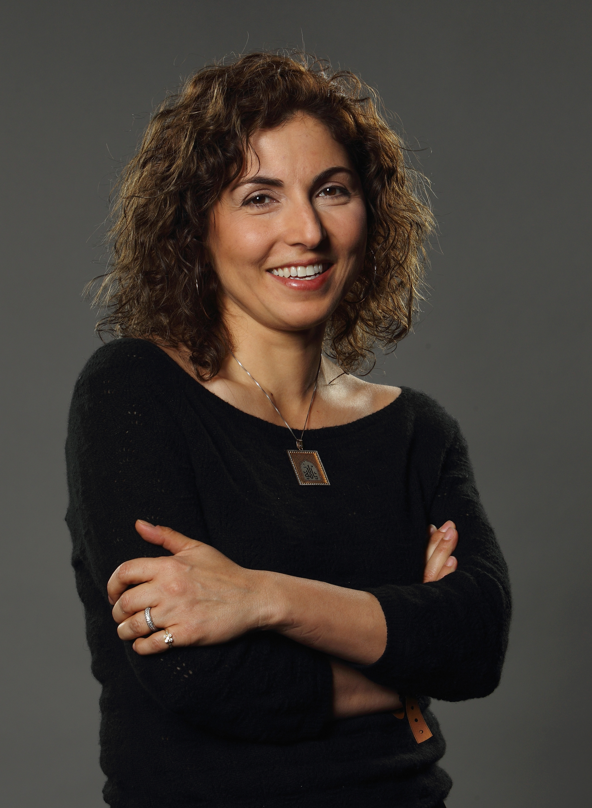

انوشه انصاری
انوشه انصاری (زادهٔ ۲۱ شهریور ۱۳۴۵ در مشهد)، کاوشگر و نیز، رئیس انجمن گردانندگان شرکت فناوری ارتباط از راه دور (TTI) است. انوشه انصاری، اولین زن گردشگر فضایی، و چهارمین نفری است که هزینه سفر فضایی خود را پرداخت کردهاست. در سال ۲۰۱۵ میلادی، جامعه ملّی فضای آمریکا جایزهٔ «پیشگام فضا» را به انصاری-نخستین زن گردشگر فضایی-اهدا کرد.
زندگی
او، متولد شهر مشهد در ایران است و در سال ۱۳۶۳ خورشیدی (۱۹۸۴)، به همراه خانوادهاش به آمریکا مهاجرت کرد. انوشه، گواهینامهٔ کارشناسی خود را در رشتهٔ مهندسی الکترونیک و علوم رایانه (EECS)، از دانشگاه جورج میسون و نیز، گواهینامهٔ کارشناسی ارشد خود را در زمینهٔ مهندسی الکترونیک، از دانشگاه جورج واشینگتن دریافت کردهاست.
سفر به فضا
انوشه، همیشه عاشق فضا و فضانوردی و در پی راه یافتن به فضا بودهاست. در ۱۸ اردیبهشت ۱۳۸۵ (۸ مه ۲۰۰۶)، سازمان فضایی روسیه بهطور رسمی اعلام کرد که انوشه انصاری بهعنوان اولین زن گردشگری فضایی در یکی از پروازهای فضاپیمای سایوز، که برای بهار ۱۳۸۵ برنامهریزی شدهبود، به مدار زمین سفر خواهد کرد. اما پس از رد صلاحیت دایسوکه انوموتو، داوطلب ژاپنی، به دلایل پزشکی و جا ماندن او از مأموریت سایوز تیامای-۹، قرار شد انوشه انصاری در ۲۳ شهریور ۱۳۸۵ با این گروه همراه شود. سازمان فضایی ایران، به عنوان متولی بخش فضا در ایران، در آستانه سفر انصاری به ایستگاه فضایی، ضمن حمایت از فعالیتها و خدمات ارزنده او در ترویج و توسعه فناوری فضایی و پرواز به ایستگاه بینالمللی به عنوان تنها جایگاه استقرار انسان در فضا را افتخاری غرورآمیز برای تمام ایرانیان، توصیف کرد. وی، نخستین فضانورد با اصلیت ایرانی در جهان است و نیز، نخستین زن کیهانگرد و چهارمین نفری است که هزینهٔ سفر فضایی خود را پرداخت کردهاست. او همچنین، پس از عبدالاحد مومند فضانورد افغانستان، دومین فضانورد فارسیزبان است. انصاری، ترجیح میدهد که در مورد خود، از عنوان «فضانورد همراه» به جای واژهٔ «گردشگر فضایی»، استفاده کند. وی، در روی لباس خود، دو پرچم ایران و آمریکا را نقش کرده بود. وی، دلیل این کار را اظهار دِین خود به این دو کشور-که در موفقیت وی نقش داشتهاند-، بیان کرد. فضاپیمای سایوز حامل انوشه انصاری، فرمانده روسی میخاییل تیورین، و مهندس پرواز اسپانیایی-آمریکایی، مایکل لوپز الگریا در صبح روز دوشنبه ۱۸ سپتامبر سال ۲۰۰۶ از پایگاه فضایی بایکونور در قزاقستان به فضا پرتاب شد، و بدین ترتیب مأموریت سایوز تیامای-۹ آغاز گشت. دو روز پس از قرار گرفتن در مدار زمین، فضاپیمای سایوز در ۲۰ سپتامبر ۲۰۰۶ با موفقیت به ایستگاه بینالمللی فضایی ملحق شد و اقامت ۹روزهٔ انوشه انصاری در ایستگاه فضایی آغاز شد. سرانجام پس از ۹ روز اقامت و پژوهش در ایستگاه بینالمللی فضایی، انوشه انصاری در سحرگاه ۷ مهر ۱۳۸۵ مصادف با ۲۹ سپتامبر ۲۰۰۶ میلادی به همراه پاول وینوگرادف روسی و جفری ویلیامز آمریکایی، دو تن از فضانوردان ساکن ایستگاه، به زمین بازگشت و پس از فرود وی در ۹۰کیلومتری شمال آرکالیک در قزاقستان با استقبال گرم خانوادهاش، ازجمله همسرش حمید، و مقامات محلی و مسئولان سازمان فضایی روسیه مواجه شد. وی پس از معاینات پزشکی، با بالگرد برای مراسم خوشآمدگویی به شهر قوستانای (در قزاقستان) منتقل شد. انوشه انصاری در طول ۹ روز اقامت خود در ایستگاه بینالمللی فضایی مجموعه آزمایشهای علمی زیر را برای آژانس فضایی اروپا انجام داد:
- پژوهش در مورد علل کمخونی
- تأثیر تغییرات ماهیچهای بر کمردرد
- تأثیر تشعشعات فضایی بر روی فضانوردان ساکن در ایستگاه بینالمللی فضایی و گونههای میکروبی که در آن ایستگاه پرورش داده شدهاند.
فعالیتهای انوشه انصاری پس از سفر به فضا
انوشه انصاری پس از بازگشت از فضا تصمیم گرفت در این زمینه تحصیل کند؛ او مدرک فوق لیسانس دوم خود را از دانشگاه سوئینبورن در رشته ستارهشناسی گرفت. انوشه انصاری مؤسسهٔ خیریهٔ «بنیاد اهورا» (Ahoora Foundation) را همراه برادر همسرش، جمشید انصاری، اداره و حمایت مالی میکند. او همچنین بههمراه امیر و حمید انصاری در حوزهٔ خانه دیجیتال (Digital Home)، شرکت پرودیا سیستمز را با هدف راهاندازی یک سیستم پیشرفته برای آمیختن و استفادهٔ سهلتر از محصولات و فایلها و تولیدات ابزار خانگی دیجیتال مانند ویدئو و صدا و فیلم تأسیس کرد، که در تگزاس و در هندوستان دفاتر رسمی دارد. انوشه انصاری در کتاب زندگینامهاش با عنوان «رویاهای من برای ستارگان» که آن را به کمک یکی از نویسندگان محبوب خود نوشته، توضیح میدهد که در دوره آموزشی او را با انواع و اقسام خطرهایی که ممکن است در یک سفر فضایی واقعی با آنها رو در رو شود، آشنا کردند تا اگر ذرهای تردید یا ناتوانی در وجودش مشاهده شد، از فهرست مسافران حذف شود. علاوه بر اینها در کتاب آمده که در دوره آموزشی بارها با موقعیتهایی مواجه شده که در حالت عادی هیچگاه انجام دادنشان را نمیپذیرفت اما در این مورد خاص هیچ مخالفتی نمیکند تا یگانه بخت خود برای سفر به فضا را به مخاطره نیندازد.
افتخارها و جایزهها
انوشه انصاری به همراه برادر همسرش در سال ۲۰۰۳ جایزهٔ ۱۰میلیون دلاریِ سالیانهٔ «انصاری اکس-پرایز» (Ansari X-prize) را بنیان نهاد. هدف از این جایزه تشویق بخش خصوصی برای سرمایهگذاری و ورود به بازار سفرهای فضایی است که تا پیش از این در انحصار تعداد انگشتشماری از دولتها بودهاست. به جز ماهیت افتخارآمیز سفر به فضا، به عنوان اولین زن گردشگر فضایی دنیا، اولین ایرانی فضانورد و اولین بانو فضانورد، انوشه انصاری بارها از سوی مجامع مختلف مورد تقدیر قرار گرفتهاست:
- سال ۲۰۰۰ به عنوان کارآفرین برتر از سوی مجله زن شاغل آمریکا
- سال ۲۰۰۱ حضور در فهرست تاجران موفق مجله معتبر فورچون آمریکا
- سال ۲۰۰۹ دریافت اولین جایزه نوآور سایمونز که سالانه توسط NCWIT به کارآفرینان موفق زن در زمینه فناوری داده میشود.
- ۲۰ دسامبر ۲۰۱۲ دریافت دکترای افتخاری علوم از دانشگاه جرج میسون
- سال ۲۰۱۵ به پاس خدمات انوشه انصاری به جامعه فضایی، جایزه ملی پیشگامان فضا ایالات متحده به او داده شد.
- فوریه ۲۰۱۷: در پی اقدام اصغر فرهادی مبنی بر تحریم فرمان منع مهاجرت هفت کشور مسلمان از جمله ایران که از سوی ترامپ صادر شده بود، در مراسم إهدا جوایز اُسکار در فوریهٔ ۲۰۱۷، اصغر فرهادی فیروز نادری و انوشه انصاری را به عنوان نمایندگان خود برای دریافت جایزهٔ اُسکار بهترین فیلم خارجی زبان، برای فیلم فروشنده معرفی نمود. در این مراسم انوشه انصاری به جای اصغر فرهادی سخرانی کرد.
|  | |
| متولد | زادروز ۲۱ شهریور ۱۳۴۵ (۵۴ سال)مشهد |
|---|---|
| ملیت | ایران/آمریکا |
| وضعیت | مهندس الکترونیک و علوم رایانه |
| مشاغل دیگر | مدیریت مؤسسهٔ خیریهٔ بنیاد اهورا (Ahoora Foundation) |
| شغل فعلی | مدیر کل و یکی از مؤسسین شرکت پرودیا سیستمز (Prodea Systems) |
| مشاغل قبلی | مؤسس، رئیس هیئت مدیره و مدیر عامل شرکت فناوری ارتباط از راه دور تله کام (Telecom Technologies, Inc) |
| درجه | کاوشگر، فضانورد همراه |
| طول پرواز فضایی | ۱۱ روز |
| تاریخ گزینش | ۱۸ اردیبهشت ۱۳۸۵ (۸ مه ۲۰۰۶) |
| ماموریت | سایوز تیامای-۹ (پرواز)، سایوز تیامای-۸ (فرود) |
| دستاورد | نخستین زن کیهانگرد، اولین فضانورد با اصلیت ایرانی | وبسایت | anoushehansari.com |